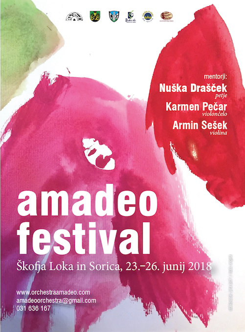
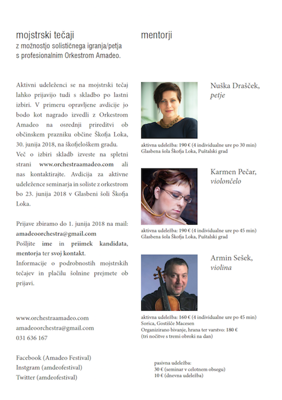

________________________________________________________________________________________________________________________
Za igranje z godalnim orkestrom Amadeo se aktivni udeleženci lahko prijavijo s skladbo po lastni izbiri, katere ime naj pošljejo skupaj s prvo prijavo, ali s skladbo s seznama:
Violina:
- A. Vivaldi: Koncert v G duru, Štirje letni časi, Eho koncert
- B. Bartok: Romunski plesi
- V. Monti: Csardasz
- H. Wieniawski: Mazurki Kujawiak in Obertas
- F. Kreisler: V tempu menueta
- N. Paganini: Koncert v D duru, Cantabille
- J. Brahms: Madžarski plesi 2 , 5 in 8
- J. Massenet: Meditacije
- P. de Sarasate: Romanca andalusa, Zigeunerweisen
- E. Elgar: Salute d' amour
- po lastni izbiri
Violončelo:
- po lastni izbiri
Petje:
- W. A. Mozart: “Voi Che Sapete”
- W. A. Mozart: “Ein Mädchen oder Weibchen”
- W. A. Mozart: “Deh vieni, non tardar”
- W. A. Mozart: “Meiner Liebsten schöne Wangen”
- W. A. Mozart: “O Isis und Osiris”
- P. Rombi: Ave Maria
- H. Purcell: When I am laid in earth
- G. F. Händel: Cleopatra's aria Piangero la sorte mia
- M. Reger: Maria Wiegenlied
- po lastni izbiri